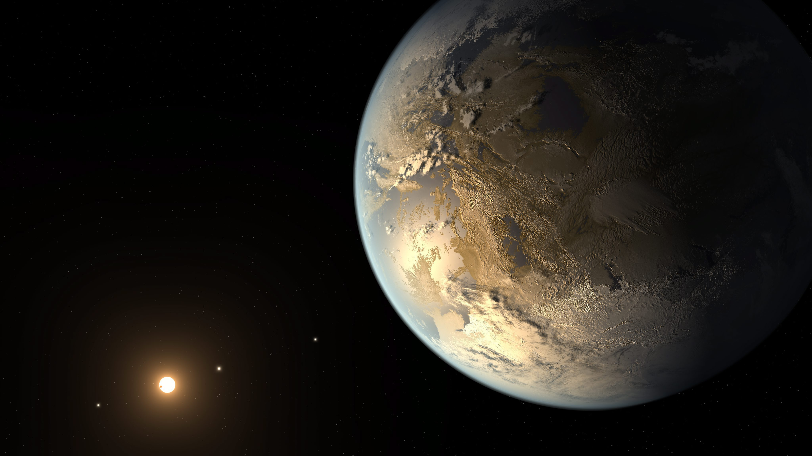

Conditions d'apparition de la vie sur une exoplanète
Même si les conditions qui ont donné naissance à la vie sur Terre sont encore loin d’être identifiées de façon précise, il est néanmoins clair que l’apparition de la vie peut s’expliquer par des phénomènes naturels. Si cet évènement a pu se produire à la surface de notre planète, il est tout à fait probable qu’il se soit produit à la surface d’autres planètes où les conditions environnementales le permettaient. 
Dans une première partie nous verrons les conditions pour qu’une planète soit habitable à travers différents paramètres tels que la distance planète étoile, les différentes propriétés de la planète ou encore l’influence du milieu externe à cette planète. Dans une seconde partie nous étudierons l’apparition de la vie sur cette exoplanète, en ré-expliquant tout d’abord ce qui est à la base de la vie en prenant pour exemple ce que nous supposons avec le plus de certitude c’est à dire l’apparition de la vie sur notre planète. Nous montrerons divers expériences qui ont été réalisées dans ce cadre.
- Accueil
- Conditions pour une planète habitable
- Apparition de la vie
- Conclusion